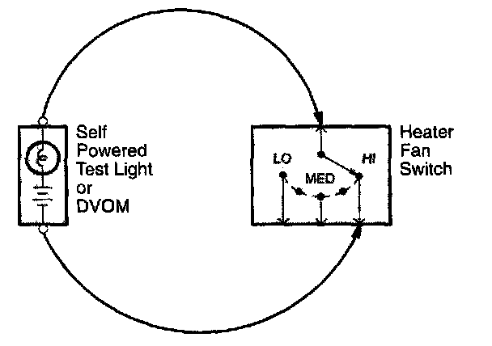

Testing For Continuity

When testing for continuity at a connector without wire seals, you do not have to separate the two halves of the connector. Instead, probe the connector from the back. Always check both sides of the connector because dirty, corroded, and bent terminals can cause problems (no electrical contact = an open).
1. Disconnect the negative cable from the car battery. If you're using a Digital Volt/Ohmmeter (DVOM), place it in the lowest "OHMS" range.
2. Connect one lead of a self-powered test light or DVOM to one end of the part of the circuit you want to test.
3. Connect the other lead to the other end.
4. If the self-powered test light glows, there is continuity. If you're using a DVOM, a low reading or no reading (ZERO), means good continuity.